Figure 2: A Feature of a Different Color
This is a quick tutorial to take you through the main features and gotchas of GBrowse. This tutorial assumes that you have successfully setup Perl, GD, BioPerl and the other GBrowse dependencies. During most of the tutorial, we will be using the "in-memory" GBrowse database (no relational database required!) At the end, we will show how to set up a database with MySQL that will scale to genome sizes.
We will be working with simulated Volvox genome annotation data. The database will be named "volvox" and GBrowse will be invoked with this URL:
http://localhost/cgi-bin/gbrowse/volvox
These directories contain data files used during the tutorial:
We will be using a file-based database which allows GBrowse to run directly off text files. To prepare this database for use, find the GBrowse databases directory which was created in your Apache web server directory at the time of installation. It should be located at $HTDOCS/gbrowse/databases, but check to make sure.
Similarly, check that you can find the gbrowse.conf configuration directory. It should be located at $CONF/gbrowse.conf and contain the configuration file "yeast_chr1.conf."
Now you will change the permissions of the database and configuration directories so that you can write to them without root privileges. This is only an issue on Unix systems, and Windows users can safely ignore this step.
% su Password: ********* # chown my_user_name $HTDOCS/gbrowse/databases # chown my_user_name $CONF/gbrowse.conf # exit %
(Be sure to replace "my_user_name" with your login name!)
Now look around inside the databases directory. There should be a single subdirectory named "yeast_chr1." The yeast subdirectory is where the example yeast chromosome 1 data set is stored.
You will create an empty volvox subdirectory, and make it world writable. On Unix systems:
% cd $HTDOCS/gbrowse/databases % mkdir volvox % chmod go+rwx volvox
NOTE: The "%" sign in these examples is the command-line prompt. On Windows systems, the command-line prompt is something like C:\Program Files\Apache Group\Apache2\htdocs\gbrowse\databases>. Unix systems are more variable, but the prompt usually ends with a "%" or a "#". In all the examples in this tutorial, what you type is rendered in boldface, while prompts and command-line results are shown in medium typeface.
On Windows systems, use the file manager ("Explorer") to create a new folder named "volvox." If you are using Windows NT, 2000 or XP, right click on the new folder and grant write privileges to all.
You'll now put the first of several data files into the volvox database directory. In the data_files subdirectory of this tutorial you will find the file volvox1.gff. Copy this into the volvox database directory. On Unix systems:
% cd $HTDOCS/gbrowse % cp tutorial/data_files/volvox1.gff databases/volvox
On Windows systems, use Explorer to copy the file into the volvox database directory.
Now we will need a GBrowse config file to tell GBrowse how to render this data set. In the subdirectory conf_files, you will find a sample configuration file named volvox.conf. Copy this into your GBrowse configuration directory ($CONF/gbrowse.conf).
You should now be able to view the data set. Point your web browser at http://localhost/cgi-bin/gbrowse/volvox and type in "ctgA" in the search box. The result is shown in Figure 1.
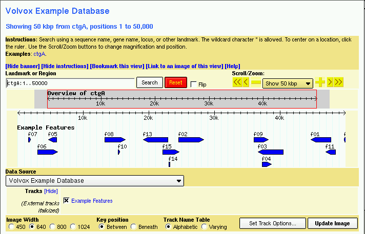
Figure 1: volvox1.gff data with volvox.conf config file.
If for some reason you get a blank page or an "Internal server error," there are a couple of things to check. First, open the file volvox.conf with a text editor ("Notepad" on Windows systems, emacs, pico or vi on Unix systems) and confirm that the path to the volvox database directory in this section is correct:
db_args = -adaptor memory -gff '$HTDOCS/gbrowse/databases/volvox'
If there is a space in "$HTDOCS" then you must be certain to put single quotes around the path as shown in the example above.
Next check that the volvox1.gff file does exist inside the volvox database directory and that it is readable by all users on your system. Similarly, check that the volvox.conf configuration file is in the same directory as yeast_chr1.conf, and that it is readable by all users on your system.
If you're still having no luck, check the bottom of the Apache server error log for error messages. This file is located in various places depending on how Apache is installed. Look for the file error_log, typically located in /usr/local/apache/logs, C:\Program Files\Apache Group\Apache2\logs, /var/log/www, or /var/log/httpd. The error message will usually point you in the right direction.
If you're still having no luck, sorry! Stop the tutorial and send an e-mail to GBrowse support at gmod-gbrowse@lists.sourceforge.net
Let's look at the data file we loaded in detail now. If you open the volvox1.gff file in a text editor, you will see that it contains a series of 15 genome "features" that look like this:
ctgA example contig 1 50000 . . . Contig ctgA ctgA example my_feature 1659 1984 . + . My_feature f07 ctgA example my_feature 3014 6130 . + . My_feature f06 ctgA example my_feature 4715 5968 . - . My_feature f05 ctgA example my_feature 13280 16394 . + . My_feature f08 ...
Each feature has a "source" of example, a type of "my_feature", and occupies a short range (roughly 1.5k) on a contig named "ctgA." In addition to the features themselves, there is an entry for the contig itself (type "contig"). This entry is needed to tell GBrowse what the length of ctgA is.
The load file uses a semi-standard known as GFF (General Feature Format). Each line of the file corresponds to a feature on the genome, and the nine columns are separated by tabs.
The 9 columns are as follows:
Now we'll look at the configuration file in more detail. Using a text editor, open the volvox.conf file from its location in the gbrowse.conf configuraton directory. (If you mess up, you can always copy a fresh version from volvox.conf in the tutorial directory).
Ignore all the stuff in the top 90% of the file, and focus on the last
little bit, which starts with the line: ### TRACK CONFIGURATION
###:
[ExampleFeatures] feature = my_feature glyph = generic stranded = 1 bgcolor = blue height = 10 key = Example Features
This is a "stanza" that describes one of the tracks displayed by GBrowse. The track has an internal name of "ExampleFeatures" which you can use in the URL to turn the track on. The internal name is enclosed by square brackets.
Following the track name are a series of options that configure the track. The "feature" option indicates what feature type(s) to display inside the track. It's currently set to display the "my_feature" feature type. The "glyph" option specifies the shape of the rendered feature. The default is "generic", which is a simple filled box, but there are dozens of glyphs to choose from. The "stranded" option tells the generic glyph to try to display the strandedness of the feature -- this is what creates the little arrow at the end of the box. "bgcolor" and "height" control the background color and height of the glyph respectively, and "key" assigns the track a human-readable label.
Let's experiment with changing the track definition. First, let's change the color of the glyph. With your text editor, change the bgcolor option from blue to "orange", save it, and reload the page. The features should change immediately as shown in Figure 2.
Figure 2: A Feature of a Different Color
Please experiment with other changes! Try changing the height to 5, the key to "Skinny features" and the stranded option to 0 (which means "false"). Just by changing a few options, you can create a very distinctive track.
Now let's try changing the glyph. One of the standard glyphs was designed to show PCR primer pairs and is called "primers". Change "glyph = generic" to "glyph = primers" and reload the page. Depending on other changes that you might have made earlier, the result will look something like Figure 3.
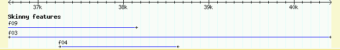
Figure 3: Using the primers Glyph
We'll see other examples of glyphs later on. To get a list of the most popular glyphs and the options that are available for them, see the file CONFIGURE_HOWTO.txt, located in the docs/ subdirectory of the GBrowse distribution. Or for the gory and bleeding edge details, run the command:
% perldoc Bio::Graphics::Panel
This produces copious documentation on the Perl interface to all the glyphs, including some amazingly obscure ones, from which you should be able to deduce the GBrowse equivalents.
Now we'll look at the interaction between feature names and GBrowse's search box. If you look through the volvox1.gff data file, you'll see that all the example features are named, and that their class is "My_feature."
GBrowse has a very flexible search feature. You can type in the name of a reference sequence, such as "ctgA", and it will display the entire thing, or you can type in a range in the format "ctgA:start..stop". Try "ctgA:5000..8000" to see this at work.
In addition, GBrowse can search for features by name. By default, the name of the object must be preceded by its class in the format Class:name. For example, if we are searching for My_feature "f07", we could type "My_feature:f07" into the search box. Try this now.
You probably don't want to remember to enter the class of the object to search for a feature. Fortunately, it is easy to declare one or more classes "automatic" and specify the order in which GBrowse will search for them. To do this with our example database, open up the volvox.conf config file, find the option named "automatic classes", and change it to read:
automatic classes = My_feature
This tells GBrowse that when the user types in an unqualified feature name, it should search the My_feature class for a match. You can now type "f07" directly into the search field and GBrowse will find and display it. If you wish, you may list several (or many!) automatic classes on this line. Just separate them by spaces:
automatic classes = My_feature Gene Transcript Contig Chromosome
For fun, try searching for the following:
By default, GBrowse will display the name of the feature above its glyph provided that there is sufficient space to do this. Optionally, you can also attach some descriptive text to the feature. This text will be displayed below the feature, and can also be searched.
You can place descriptions, notes and other comments into the ninth column of the GFF load file. The example file volvox2.gff shows how this is done. An expert from the top of the file looks like this:
ctgA example motif 11911 15561 . + . Motif m11 ; Note "kinase" ctgA example motif 13801 14007 . - . Motif m05 ; Note "helix loop helix" ctgA example motif 14731 17239 . - . Motif m14 ; Note "kinase" ctgA example motif 15396 16159 . + . Motif m03 ; Note "zinc finger"
This defines several new features of type "motif". The ninth column, in addition to giving each of the motifs names (e.g. "Motif m11"), adds a "Note" attribute to each feature. Attributes are name/value pairs, where the attribute name is a single word, and the value is a piece of text. If the value text contains white space (spaces or tabs), the text must be enclosed by double quotes as shown above. It doesn't hurt to enclose the text in quotes even if it doesn't contain white space, which is what we've done here. Attribute pairs are separated from the Class/name pair by a semicolon, as shown above.
We will see later how to take advantage of different types of attributes. For now, it is only important to know that an attribute named Note is automatically displayed and made searchable. To see this work, add volvox2.gff to the volvox database. You can do this just by copying the file into $HTDOCS/gbrowse/databases/volvox so that the directory contains both the original volvox1.gff and the new volvox2.gff files.
To display this newly-loaded data set, open up volvox.conf and add the following new stanza to the config file:
[Motifs] feature = motif glyph = span height = 5 description = 1 key = Example motifs
This defines a new track whose internal name is "Motifs." The corresponding feature type is "motif" and it uses the "span" glyph, a graphic that displays a horizontal line capped by vertical endpoints. The height is set to five pixels, and the human-readable key is set to "Example motifs." A new option, "description" is a flag that tells GBrowse to display the Note attribute, if any. Any non-zero value means true.
After updating the configuration file, you will need to reload the browser page and turn on the "Example motifs" checkbox below the main image. The result is shown in figure 4.
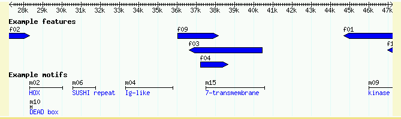
Figure 4: Showing the Notes attribute
A copy of this config file is also available for you to use in volvox2.conf.
To show that GBrowse will search the notes for keyword matches, try typing in "kinase." You will be presented with a list of all the motifs whose Note attribute contains the word "kinase."
Many features are discontinuous. Examples include spliced transcripts, and gapped sequence similarity alignments, such as the alignment of cDNAs to the genome. GBrowse can deal with such features easily provided that you take a little care in setting them up.
The data file volvox3.gff contains a simulated data set of a series of gapped nucleotide alignments. An excerpt from the file is here:
ctgA example match 6885 8999 . - . Match seg03 ctgA example HSP 6885 7241 . - . Match seg03 ctgA example HSP 7410 7737 . - . Match seg03 ctgA example HSP 8055 8080 . - . Match seg03 ctgA example HSP 8306 8999 . - . Match seg03 ctgA example match 5233 9825 . - . Match seg04 ctgA example HSP 5233 5302 . - . Match seg04 ctgA example HSP 5800 6101 . - . Match seg04 ctgA example HSP 6442 6854 . - . Match seg04 ctgA example HSP 7106 7211 . - . Match seg04 ctgA example HSP 7695 8177 . - . Match seg04 ctgA example HSP 8545 8783 . - . Match seg04 ctgA example HSP 8869 8935 . - . Match seg04 ctgA example HSP 9404 9825 . - . Match seg04
Each segmented feature is represented by several lines in the GFF file that share the same feature name. Each feature has a single GFF line of type "match" whose start and end coordinates correspond to the full length of the alignment. Following this are one or more lines of type "HSP" with start and end coordinates indicating a section of the match. You will recognize this terminology from the standard BLAST report.
For example "Match seg03" starts at position 6885 and ends at 8999. It has four subsegments, one from 6885..7241, another from 7410..7737, and so forth.
The types "match" and "HSP" are not arbitrary, but are needed to tell the GBrowse database what the relationship between the full-length feature and its subparts are. The specific type names expected are mediated by a series of "aggregators" -- code modules that are loaded when GBrowse starts up. We will see later in this section how to manipulate these aggregators and to define custom ones.
Add volvox3.gff into the volvox database by copying it into the volvox database directory. Then edit volvox.conf to add the following track definition:
[Alignments] feature = match glyph = segments key = Example alignments
This is declaring a new track named "Alignments" which displays features of type "match" using a glyph named "segments". The segments glyph is specialized for displaying objects that have multiple similar subparts.
Save the modified config file and reload the page in the browser. Disappointingly, you'll see something like Figure 5. Instead of showing multi-segmented features, the track shows a single solid box that spans the entire length of the feature.
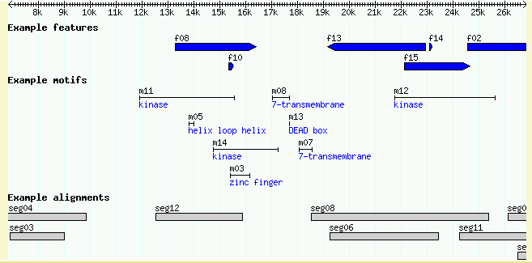
Figure 5: Without activating an aggregator, multisegmented features do not displayed properly
To make multipart features display correctly, you must activate or define an appropriate aggregator. This is very easy for the similarity/match relationship, because there's already a predefined aggregator named "match." Reopen the volvox.conf configuration file, and find the option line near the top of the file that reads "aggregators = ". Change this to read as follows:
aggregators = match
This is telling GBrowse to turn on the "match" aggregator. Now reload. You should see a much-improved image similar to Figure 6.
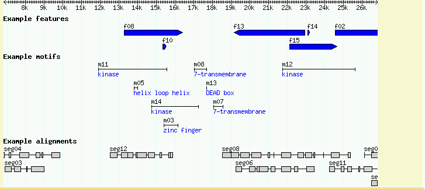 Figure 6: Turning on the "match" aggregator allows GBrowse to recognize that the match feature has subparts
| Aggregator name | Main type | Subtype(s) | Purpose |
|---|---|---|---|
| alignment | (none) | similarity | nucleotide and protein alignments where the full extent of the match is unknown |
| coding | mRNA | CDS | Used in concert with the "cds" glyph to display the reading frame used by the coding portion of each exon. |
| clone | (none) | Clone_left_end Clone_right_end | Used for cases in which clone ends have been mapped to the genome, but one of the ends may be missing. |
| match | match | similarity, HSP | nucleotide and protein alignments |
| processed_transcript | mRNA | CDS, UTR, 5'-UTR, 3'-UTR transcription_start_site, polyA_site | the canonical spliced gene |
| transcript | transcript | exon TSS PolyA | a spliced transcript that expects exon features |
To use any of these aggregators, follow this recipe:
aggregators = match processed_transcript
clone.
feature. For example
feature=processed_transcript.
GBrowse can display protein-coding genes in various shapes and styles. The easiest way to set this up is to use the "processed_transcript" aggregator and its companion glyph also called "processed_transcript." Take a look at the file volvox4.gff, which defines a gene named EDEN, and its three spliced forms named EDEN.1, EDEN.2 and EDEN.3. Here is the top part of the file:
ctgA example gene 1050 9000 . + . Gene EDEN ; Note "protein kinase" ctgA example mRNA 1050 9000 . + . mRNA EDEN.1 ; Gene EDEN ctgA example 5'-UTR 1050 1200 . + . mRNA EDEN.1 ctgA example CDS 1201 1500 . + 0 mRNA EDEN.1 ctgA example CDS 3000 3902 . + 0 mRNA EDEN.1 ctgA example CDS 5000 5500 . + 0 mRNA EDEN.1 ctgA example CDS 7000 7610 . + 0 mRNA EDEN.1 ctgA example 3'-UTR 7611 9000 . + . mRNA EDEN.1 ctgA example mRNA 1050 9000 . + . mRNA EDEN.2 ; Gene EDEN ctgA example 5'-UTR 1050 1200 . + . mRNA EDEN.2 ...
The first line of the file defines the gene as a whole, starting at position 1050 of ctgA and extending to position 9000. Following this, there are three sets of lines that define the structure of the spliced forms EDEN.1, EDEN.2, and EDEN.3, only the first of which is shown in its entirety here. By convention, the whole transcript is represented as type "mRNA". It has subparts named "5'-UTR", CDS, and "3'-UTR", where the UTR features are the 5' and 3' untranslated regions, respectively, and CDS is the coding region. Note how the CDS is split by splicing among multiple discontinuous locations on the reference sequence. The UTRs can be split in this way too.
Each mRNA and its subparts are grouped together under a common name in the ninth column ("mRNA EDEN.1", "mRNA EDEN.2", and so forth). In addition, each mRNA has a Gene attribute that ties it to the EDEN gene itself ("Gene EDEN"). Although this isn't required for the display, doing this will identify the various alternative transcripts as belonging to the same gene should you wish to use the GBrowse database for data mining. It will also show the user what gene the transcript belongs to when he or she clicks on it for details.
HINT: If you prefer not to distinguish between 5' and 3' UTRs, you can simply use "UTR" as the type. If you don't know where the UTRs are, just leave them blank. If you'd rather think in terms of exons and introns, then check out the "transcript" aggregator and its corresponding "transcript" glyph.
Go ahead and add volvox4.gff to the database. Then make the following changes to volvox.conf:
aggregators = match
processed_transcript
[Transcripts]
feature = processed_transcript
glyph = processed_transcript
bgcolor = peachpuff
description = 1
key = Protein-coding genes
The updated aggregators option loads the processed_transcript aggregator, which knows how to put CDS and UTR features together to form a spliced transcript. The new Transcripts track associates aggregated processed_transcript features with the like-named glyph, sets its background color to peachpuff (yes, there really is a color by this name!), turns on the description lines, and sets the human readable track name to "Protein-coding genes."
The aggregators option demonstrates that GBrowse config file options can continue across multiple lines provided that each additional line is indented.
Upon reloading the page, turning on the new "Protein-coding genes" track, and viewing the region around 1..10K, you'll see this:
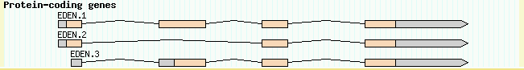
Figure 7: The canonical processed_transcript glyph
This image is nice, but we can make it even better. One problem is that the gene description (the Note in the EDEN GFF line) isn't being displayed, because the description is attached to the gene and not to the individual mRNAs. To fix this, we simply tell GBrowse to display features of type "gene" as well as those of type "processed_transcript". Modify volvox.conf so the last stanza looks like this:
[Transcripts] feature = processed_transcript gene glyph = processed_transcript bgcolor = peachpuff description = 1 key = Protein-coding genes
The only change is that there are now two types listed for the feature option, "processed_transcript" and "gene." This is telling GBrowse to place both feature types in the same track. If we reload the page, it now looks like this:
Figure 8: Showing the gene as well as its transcripts
The processed_transcript glyph has a number of options that you can use to customize its appearance:
| Option Name | Possible values | Description |
|---|---|---|
| thin_utr | 0 (false), 1 (true) | If true, makes UTRs half-height. |
| utr_color | a color name ("gray" by default) | Changes the UTR color. |
| decorate_introns | 0 (false), 1 (true) | If true, puts little arrowheads on the introns to indicate direction of transcription. |
Using these options, we can make the track look like the UCSC Genome Browser (Figure 9).
[Transcripts] feature = processed_transcript gene glyph = processed_transcript height = 8 bgcolor = black utr_color = black thin_utr = 1 decorate_introns = 1 description = 1 key = Protein-coding genes
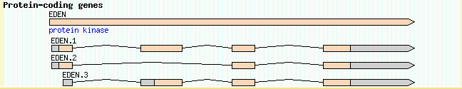
Figure 9: A UCSC Genome Browser lookalike
Continuing with the example from the last section, the third exon of EDEN.1 is shared with EDEN.3. But is the reading frame preserved? The "coding" aggregator used in concert with the "cds" glyph creates a display that will visualize each CDS's reading frame.
To see this work, add the predefined "coding" aggregator to the list of aggregators:
aggregators = match processed_transcript coding
The "coding" aggregator is similar to processed_transcript, except that it only pays attention to the CDS parts of the transcript. It was designed to work hand-in-hand with the "cds" glyph. (For historical reasons, the glyph is called "cds" rather than "coding.")
Now add the following short stanza to the bottom of the configuration file:
[CDS] feature = coding glyph = cds key = Frame usage
When you reload the page and turn this track on, you'll see a "musical staff" representation of the frame usage (Figure 10). From this we can see that the alternative splicing in fact changes the reading frame of the second exon.
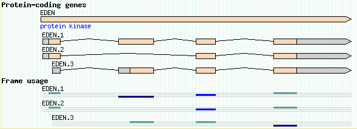
Figure 10: The "cds" glyph shows the reading frame using a musical staff notation
If none of the predefined aggregators meets your needs, it is simple to define a custom one of your own. For example, say you wanted to display a feature of type "BAC", whose subparts are of type "left_end_read" and "right_end_read" (possibly corresponding to a BAC clone mapping experiment). Here is a GFF representation of this:
ctgA example BAC 1000 20000 . . . BAC b101.2 ; Note "Fingerprinted BAC with end reads" ctgA example left_end_read 1000 1500 . + . BAC b101.2 ctgA example right_end_read 19500 20000 . - . BAC b101.2
This is the contents of volvox5.gff. Go ahead and add this into the database now. To visualize this you will:
To define the custom aggregator, open volvox.conf and add the following to the aggregators line:
aggregators = match
processed_transcript
coding
BAC{left_end_read,right_end_read/BAC}
The thing named BAC{left_end_read,right_end_read/BAC} is the custom aggregator definition. Its format is aggregator_name{subtype1,subtype2,subtype3.../main_type}. Here we're defining an aggregator of type "BAC" which has subparts of type "left_end_read" and "right_end_read" (separated by commas) and top-level type of "BAC" (separated from the subparts by a slash). Although it's not necessary to use the same name for both the main feature type and the aggregator, it's often convenient to do so.
Now add the appropriate stanza to the bottom of volvox.conf:
[Clones] feature = BAC glyph = segments bgcolor = yellow strand_arrow = 1 description = 1 key = Fingerprinted BACs
With this new track turned on, look at ctgA:1..24200. It will show that GBrowse has correctly picked up and rendered the relationship between the whole BAC and its two end reads (Figure 11).
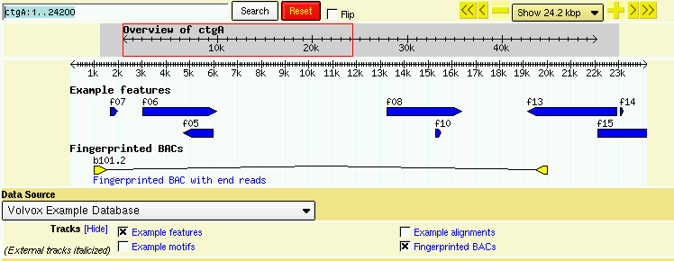
Figure 11: The glyph produced by a custom BAC aggregator
For your convenience, the configuration file with all the modifications made up through this point of the tutorial can be found in volvox3.conf.
GBrowse can plot quantitative data such as alignment scores, confidence scores from gene prediction programs, and microarray intensity data. The data can be displayed either with glyphs that change color to indicate score levels (see the "heterogeneous_segments", "graded_segments" and "redgreen_box" glyphs), or using a general-purpose XY-plot glyph.
Congratulations, Affymetrix has built a transcriptional profiling chip for Volvox! There's now a transcriptional profile for volvox, with an intensity reading every 100 bp across all of ctgA. The simulated data for this is in the file volvox6.gff, an excerpt of which is shown here:
ctgA affy tlevel 1 100 281 . . Affy Expt1 ctgA affy tlevel 101 200 183 . . Affy Expt1 ctgA affy tlevel 201 300 213 . . Affy Expt1 ctgA affy tlevel 301 400 191 . . Affy Expt1 ctgA affy tlevel 401 500 288 . . Affy Expt1 ...
The file contains 500 features, each of which is exactly 100 bp long. The features are of type "tlevel" ("transcriptional level") and of source "affy." Each one has a score (column 6) between 0 and 1000, where higher scores means more transcriptional activity. This is the first time we've used the score column.
All of the 500 features share the same group (column 9) of "Affy Expt1." They are grouped in this way because the entire set of 500 features represents a single transcriptional profiling experiment. If we had multiple experiments to show, they would be named Expt1, Expt2 and so on.
We would like to generate a line graph that shows the transcriptional profile level across the current region. To do this, we will first create an aggregator that will bring all the individual tlevel features together into a single feature named "tprofile." This is done as described in the previous section. Modify the configuration file's aggregators option to read as follows:
aggregators = match
BAC{left_end_read,right_end_read/BAC}
processed_transcript
coding
tprofile{tlevel}
We now need to use this aggregated feature in a track stanza. Create the following section:
[TransChip] feature = tprofile glyph = xyplot graph_type = boxes height = 50 min_score = 0 max_score = 1000 graph_type = line scale = right key = Transcriptional Profile
The options shown here create a track named TransChip to display the tprofile feature with the xyplot glyph. The "graph_type", "height", "scale", "min_score", and "max_score" options all configure various aspects of the xyplot glyph's appearance.
You can read all about xyplot's options using perldoc Bio::Graphics::Glyph::xyplot
When you reload the page and turn on the Transcriptional Profile track, you should see something like that shown in Figure 12.
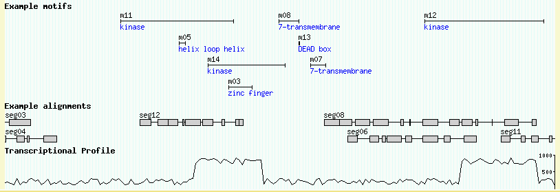
Figure 12: A transcriptional profile rendered with the xyplot glyph
Using the info that perldoc provides, play around with the xyplot options a bit. For example, see what happens when you change graph_type to "boxes."
GBrowse can take advantage of DNA sequence data in several ways:
So we've been working with feature coordinates, but no actual DNA sequence has been loaded into the volvox database. We will again rebuild the database, this time loading in a simulated DNA file in fasta format. Download the file volvox.fa, and copy it into the volvox database directory. At this point in the tutorial, when you do a directory listing of the volvox database directory (with "ls" on unix systems, or "dir/w" on Windows systems) it should look like this:
% ls $HTDOCS/gbrowse/databases/volvox/ volvox.fa volvox2.gff volvox4.gff volvox6.gff volvox1.gff volvox3.gff volvox5.gff
After copying the .fa file into the volvox database directory, you will need to change the configuration file very slightly to tell GBrowse to look for and load the FASTA file. At the top of the config file, change the db_args section to look like this:
db_args = -adaptor memory -dir /usr/local/apache/htdocs/gbrowse/databases/volvox
Previously the -gff argument told GBrowse to load all GFF files in the directory. The new -dir argument says to load both GFF files and FASTA sequence files. (There's also a -fasta argument to load sequence without features, but this is not much use with GBrowse.)
This is all you need to do to load the DNA. To see that the DNA is indeed being loaded, add two new stanzas to the volvox.conf configuration file:
[DNA] glyph = dna global feature = 1 height = 40 do_gc = 1 fgcolor = red axis_color = blue strand = both key = DNA/GC Content [Translation] glyph = translation global feature = 1 height = 40 fgcolor = purple start_codons = 0 stop_codons = 1 translation = 6frame key = 6-frame translation
The "DNA" track uses a specialized glyph called "dna". At low magnifications (zoomed way out), this glyph draws a GC content plot. At high magnifications (zoomed way in), this glyph draws the dna. Of the various options given in the example stanza, the most important one is "global feature", which is set to a true value (1). This tells GBrowse that the stanza doesn't correspond to a specific feature type, but should be displayed globally. Other options control whether to draw one or both strands, whether to draw the GC content histogram, and what colors to use.
Similarly, the "Translation" track uses a glyph called "translation", which draws three or six-frame conceptual translations. At low magnifications (zoomed way out), this glyph draws little symbols indicating where start and stop codons are. At high magnifications, the actual amino acid sequence comes into view. Again, the most important option is "global feature", which is set to a true value to tell GBrowse that the track isn't attached to a particular feature type, but is to be generated automatically. Other options control the height of the glyph, whether to draw start and/or stop codon symbols, and whether to generate a 3frame or 6frame translation.
Figures 13a and 13b show the browser at low and high magnification, with both tracks activated. Notice that the coding track ("cds" glyph) notices that the DNA is available and generates the transcripts' protein translations automatically!
(13A)
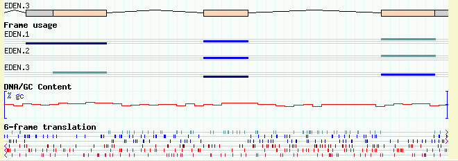
(13B)
Figure 13: Viewing DNA/GC content and 6-frame translation. (a) low magnification; (b) high magnification
If you happen to do a listing of the volvox database directory after adding the DNA file, you might notice that a new file named "directory.index" has appeared. This index directory is created automatically by GBrowse in order to speed up access to the .fa file and to reduce memory requirements. If the database directory is not writable by all users, GBrowse will not be able to create this directory, and the display will be somewhat slower whenever a DNA track is turned on.
This section will lead you through creating a plausible EST track, and show you how grouping of 5' and 3' EST reads works.
We'll start with a simple data set containing information on three pairs of EST reads. You'll find this data set in volvox7.gff. Here is the first pair described in the data file:
ctgA est match 1050 3202 . + . EST agt830.5 ctgA est HSP 1050 1500 . + . EST agt830.5 ctgA est HSP 3000 3202 . + . EST agt830.5 ctgA est match 5410 7503 . - . EST agt830.3 ctgA est HSP 5410 5500 . - . EST agt830.3 ctgA est HSP 7000 7503 . - . EST agt830.3 ...
What's going on here is the same as the alignments shown in volvox3.gff. There are two EST reads named agt830.5 (the 5' read) and agt830.3 (the 3' read). Each of them matches the ctgA genome in two discontinuous regions because, presumably, they cross a splice site. As in the earlier example, we represent each EST as a single "match" feature that spans the entire region, plus a series of "HSP" features that correspond to the aligned regions. The last column is used to group the match and HSP features together using the class and name of the feature, where the class is arbitrarily chosen to be "EST."
There are two other things to notice. One is that the source field (column 2) is "est". All previous examples used "example" here. This is because we need to distinguish this set of alignments from the generic alignments in volvox3.gff. The second item of interest is that the strand field (column 7) is + for the 5' EST and - for the 3' EST, indicating that the 3' EST aligned to the reverse complement of ctgA.
Add this file to the volvox database directory, and add the following to the configuration file:
[EST] feature = match:est glyph = segments height = 6 bgcolor = orange key = ESTs
This will give a display similar to that shown in Figure 14.
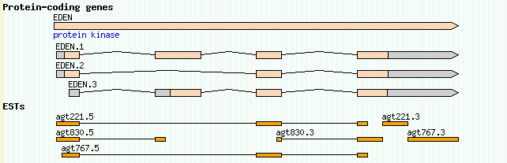
Figure 14: A simple representation of EST matches.
Notice that the feature option reads "match:est" rather than simply "match." This is to distinguish the EST matches from the example matches that we loaded previously. When needed, you can use the source field (column 2) to distinguish different features of the same type, using the format "type:source". You can use this equally well with ordinary types (e.g. "my_feature:example") or with aggregated types ("processed_transcript:genscan").
This display is OK, but it could be better. One problem is that the relationship between the 5' and 3' EST read pairs is not shown. We'd like to place the two members of the pair together on the same line, and connect them with a dotted line to show that they are the two ends of the same cDNA clone. Recall that we did something similar to this with the custom BAC aggregator. Unfortunately, there's a problem with the ESTs because we are already using the "match" aggregator to perform one level of grouping, and the GFF load format only allows one level of grouping at a time (this is changing in a proposed new version of the format).
For the time being, we can work around this problem using a "hack." Change the [EST] track configuration to look like this:
[EST] feature = match:est glyph = segments bgcolor = orange group_pattern = /\.[53]$/ key = ESTs
The new group_pattern option tells GBrowse to use a Perl regular expression pattern matching operation to find and group related EST matches based on their names. It helps to understand how Perl regular expressions work, but basically the pattern match breaks down this way:
/ begin the pattern match \. match a dot [53] match either the numbers 5 or 3 $ match the end of the string / end the pattern match
What this is saying is to look for pairs of EST names that are similar except for the terminal .5 or .3, and pair them. When we reload the page, we get Figure 15.
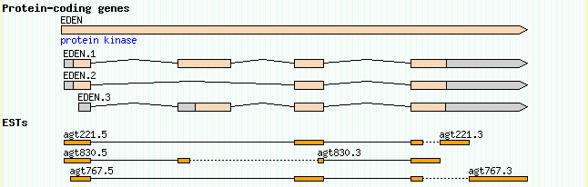
Figure 15: The group_pattern option allows EST pairs to be grouped
Here are regular expressions that will work for other common EST pairing schemes:
| 5' EST | 3' EST | group_pattern |
|---|---|---|
| agt123f | agt123r | /[fr]$/ |
| agt123p | agt123q | /[pq]$/ |
| f.agt123 | r.agt123 | /^[fr]\./ |
| 5.agt123 | 3.agt123 | /^[53]\./ |
| agt123.for | agt123.rev | /\.(for|rev)$/ |
Another nice enhancement would be to give the 5' and 3' ESTs different colors so as to distinguish one from another. This can be accomplished using a Perl callback. Open up volvox.conf once more, and find the bgcolor option in the [EST] track. Replace it with this (you may want to cut and paste from here in order to avoid introducing any typos):
bgcolor = sub {
my $feature = shift;
my $name = $feature->display_name;
if ($name =~ /\.5$/) {
return 'red';
} else {
return 'orange';
}
}
You'll need to know the basics of the Perl programming language in order to do this type of thing yourself. Suffice to say that instead of hard-coding the color "orange" into the bgcolor option, we are asking GBrowse to run a Perl subroutine each time it needs to render an EST. The subroutine is passed the feature that is about to be drawn. It asks the feature for its human-readable name (display_name) and assigns that name to a variable named $name. It then performs a pattern match on the name to see if it ends in a "5". If the name matches, the subroutine returns the color "red" to GBrowse. Otherwise it returns the color "orange."
The effect is shown in Figure 16.
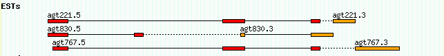
Figure 16: Using a callback to distinguish 5' and 3' ESTs
The last thing we'll do with the EST data set is to add DNA to the ESTs so that at high magnification GBrowse will show the multiple alignment. This information is also used by the "dump alignments" plugin to generate a text-based multiple alignment.
NOTE: Currently only nucleotide to nucleotide alignments can be displayed at the level of individual nucleotides (e.g. BLASTN, BLAT, Exonerate). Protein to nucleotide alignments, such as those produced by Genewise or BLASTX, are not supported at the residue level
To make this work, we need to add two additional pieces of information to the EST alignment data:
ctgA 1050 gattgccattgaccttggccattggccaagctgaa 1086
|||||||||| ||||||| ||||||||||||||||
agt830.5 1 gattgccattcaccttgggcattggccaagctgaa 135
What we currently have in the GFF file are the source genomic positions of the alignments (in ctgA-relative coordinates). We need to add the target positions in agt830.5-relative coordinates in order for GBrowse to fetch and display the appropriate segments of the EST DNA.
The fasta file ests.fa provides the DNA sequences for the six EST reads. The GFF load file volvox8.gff contains the revised coordinates. If you look at this file you'll see that it is dissimilar to previous load files:
ctgA est match 1050 3202 . + . Target EST:agt830.5 1 554 ctgA est HSP 1050 1500 . + . Target EST:agt830.5 1 451 ctgA est HSP 3000 3202 . + . Target EST:agt830.5 452 654 ctgA est match 5410 7503 . - . Target EST:agt830.3 1 595 ctgA est HSP 5410 5500 . - . Target EST:agt830.3 505 596 ctgA est HSP 7000 7503 . - . Target EST:agt830.3 1 504
The first eight columns are identical to what we've been using before, but the ninth column follows a new convention used for nucleotide to nucleotide and protein to nucleotide alignments. There is now a special class name, "Target", that tells GBrowse that the group field represents the combination of a target sequence and its coordinates. Following Target is the name EST:agt830.5, which is a composite of the "real" class name ("EST") and the name of the EST. The two are separated by a colon in the format "class:name". Following this are two numbers indicating the start and end of the alignment in EST coordinates.
There are a couple of subtleties to notice here. First of all, notice that the "match" features extend all the way across the matched area of the genome (1050 to 3202 in the case of agt830.5), and all the way across the matched area of the target (1 to 554). Because one or both of the matched regions may contain gaps, the source and target regions do not have to be the same length. On the other hand, each HSP covers an ungapped contiguous region: the first HSP covers 1050..1500 in genome coordinates and 1..451 in target (EST) coordinates; the second covers 3000..3202 in genome coordinates and 452..654 in target coordinates. The HSPs should have the same alignment length in both genome and target coordinates, or at least very close lengths. If the lengths are close but not identical, GBrowse will realign the segments, introducing small gaps where necessary.
NOTE: GBrowse uses a simple but slow segment realigner. If there are numerous gaps, it is better to break them into a set of smaller colinear HSPs than to rely on the realigner to do it for you.
The second subtlety to notice is that for the minus strand ESTs, the target coordinates are not reversed, that is, the start position is less than the end position. For example, for the first agt830.3 HSP, we are told that genomic region 5410..5500 aligns to EST region 505..596. The strand field is used to determine the direction of the alignment.
Note that this contradicts the historical implementation of GFF but the current use is more internal consistent and is the method for target annoation in the proposed revision of GFF.
Since this data file contains a revised version of volvox7.gff, remove volvox7.gff from the database directory and replace it with volvox8.gff. Also copy ests.fa into the database directory. If you perform a directory listing, it should look like this:
directory.index volvox.fa volvox2.gff volvox4.gff volvox6.gff ests.fa volvox1.gff volvox3.gff volvox5.gff volvox8.gff
We're not done with making configuration file changes, but volvox4.conf contains all configuration file enhancements up to this point. If you like, you can copy it over the live volvox.conf. It contains the following version of the [EST] track:
[EST]
feature = match:est
glyph = segments
height = 6
draw_target = 1
show_mismatch = 1
canonical_strand = 1
bgcolor = sub {
my $feature = shift;
my $name = $feature->display_name;
if ($name =~ /\.5$/) {
return 'red';
} else {
return 'orange';
}
}
group_pattern = /\.[53]$/
key = ESTs
The key addition to this track configuration is the "draw_target", "show_mismatch" and "canonical_strand" options. All options are true/false flags, where 0 means false and 1 means true. draw_target tells the segments glyph to draw the DNA sequence of the target ESTs when the magnification allows. show_mismatch instructs the glyph to highlight mismatches between the genome and the EST in pink. canonical_strand instructs the glyph to display the plus strand sequence even when the EST matches the minus strand.
To see this work, reload the page, turn on the EST track and search for region "ctgA:1065..1165". This will show the aligned 5' ends of agt221.5, agt830.5 and agt767.5 (Figure 17). Notice that one of the T's towards the beginning of agt830.5 is highlighted in red, to show that it doesn't match the corresponding genomic base.
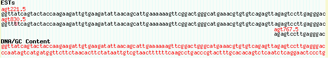
Figure 17: Multiple alignments at the DNA level
If you don't see the EST sequence appearing, make sure that ests.fa is in the volvox database directory and is world readable. If it still isn't working, you may need to "touch" the file in order to update its modification date. This tells GBrowse that it is new and needs to be reindexed. In Unix:
% touch $HTDOCS/gbrowse/databases/volvox/ests.fa
Is all the effort to load the genomic and EST DNAs worth it? Yes, if you want to take advantage of two popular plugins, RestrictionAnnotator and Aligner. The first generates a track of restriction sites. The second dumps a text-based multiple alignment of the current region on view.
To see these plugins at work, find the option "plugins=" at the top of volvox.conf, and modify it to activate the Aligner and RestrictionAnnotator plugins:
plugins = Aligner RestrictionAnnotator
When you reload the page, you will see a new popup menu appear under the image labeled "Dumps, searches and other operations." You will also see an automatic track labeled "plugin:Restriction Sites" appear in the track list. When you turn on this track, you will be presented with a restriction map (Figure 18). You can then adjust which restriction sites are shown by selecting "Annotate Restriction Sites" from the popup menu and pressing the "Configure" button.
Figure 18: The RestrictionAnnotator Plugin
To see the Aligner at work, center your view on a region that contains the EST alignments (for example, ctgA:1000..5000), select "Dump Alignments" from the plugin popup menu, and press "Go". This will return a text-based multiple alignment of the genome and the EST tracks.
The Aligner plugin has some additional configuration that you can perform. We'll look at this now as an example of how to configure plugins.
Open up volvox.conf and add the following configuration section:
######################## # Plugin configuration ######################## [Aligner:plugin] alignable_tracks = EST upcase_tracks = CDS Motifs upcase_default = CDS
It doesn't matter where the section goes, but it is probably a good idea to place this towards the middle of the file after the [GENERAL] section (at the top) and before the [TRACK DEFAULTS] section. Otherwise it is easy for you or someone else maintaining the configuration file to mistake this for some sort of track configuration.
Plugin configuration sections are distinguished from track configuration by having names of the format PluginName:plugin. In this case, the three configuration options are applied to the Aligner plugin. For the Aligner plugin, the configuration options are:
| Option | Description |
|---|---|
| alignable_tracks | Space-delimited list of tracks to include in the multiple alignment. The genome is always included. If this option is not present, then GBrowse will automatically include any track that has the "draw_target" option set. |
| upcase_tracks | Space-delimited list of tracks that will be used to UPCASE the genomic DNA. This is very useful if you want to embed the positions of coding regions or other features inside the multiple alignment. Uppercasing will not be turned on by default. The user must press the "Configure" button, and select which of the uppercase tracks are to be activated from a list of checkboxes. |
| upcase_default | A space-delimited list of tracks that will be uppercased by default unless the user turns them off during configuration. |
| ragged_default | A small integer indicating that the aligner should include some unaligned bases from the end of each sequence. This is useful for seeing the sequencing primer or cloning site in ESTs. |
With the changes in place, select the aligner from the popup menu and press Configure. Turn on uppercasing of the coding region track and see how it affects the display (Figure 19).
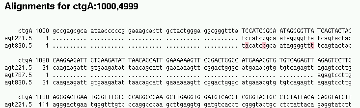
Figure 19: The Aligner plugin produces multiple alignments.
Only a few of the plugins are currently well-documented, but this situation is being rectified. To view their documentation, if any, find the plugin file, which usually lives under gbrowse.conf/plugins, and run the perldoc command with the -F ("file") option:
% perldoc -F Aligner.pm
Here's the list of plugins that come with the standard distribution:
| Plugin | Description |
|---|---|
| Aligner | Dump multiple alignments |
| BatchDumper | Allows the user to cut and paste a series of landmarks on the genome and dumps out all overlapping features using a variety of formats (e.g. GenBank format) |
| FastaDumper | Produce pretty-printed FASTA dumps of the current region, with selected features highlighted with colors or font styles. |
| GFFDumper | Dump out the current region in GFF format (redundant with BatchDumper). |
| OligoFinder | Lets the user search for landmarks on the basis of unique 11-mers or greater. |
| RestrictionAnnotator | Creates restriction maps. |
| SequenceDumper | The same functionality as BatchDumper, but just shows features that overlap the current region on view. |
Although the example that we've been working with only has a single reference sequence (the infamous "ctgA"), many projects will have multiple references. Reference sequences can be anything that acts as a convenient landmark: sequenced clones, contigs, scaffolds, golden path segments, or whole chromosomes.
There are just a few rules to be aware of when setting up the load files:
Let us review these three criteria for the volvox example. If you look at the top of the initial load file, volvox1.gff, you'll see the very first line is:
ctgA example contig 1 50000 . . . Contig ctgA
1. The class for the name "ctgA" is Contig. If we were using other reference sequences as landmarks, then they too would have to be identified as Contigs.
2. This line describes "ctgA" as a feature relative to itself. The feature starts at position 1 (it has to!) and ends at position 50,000. The source is "example" and the type is "contig." If there are other reference sequences in the database, they do not have to share the "contig" type. This allows you refer to other types of landmarks, such as clones.
3. If you examine the top few lines of the volvox.conf configuration file, you'll see this line:
reference class = Contig
This line is required for GBrowse to effectively find and render with features located on the reference sequence.
If you find this confusing, it might help to choose "Reference" as the class. Then you can write GFF load files like this:
ctgA example contig 1 50000 . . . Reference ctgA chr22 example chromosome 1 1150000 . . . Reference chr22 5p3.2 example band 1 830000 . . . Reference 5p3.2
Don't forget to update "reference class" in the config file!
Alternatively, you can use the word "Sequence" as the class name for reference sequences. For historical reasons, "Sequence" is recognized as the default classname. This means you don't have to have a "reference class" option in the config file at all.
One of the cooler features of GBrowse is its ability to support semantic zooming. Semantic zooming is a feature in which objects show different levels of detail depending on the level of magnification. We've already seen this behavior in the "dna" and "segments" glyphs, which show the DNA sequence only when there's sufficient room to display it.
GBrowse has several types of semantic zooming:
The thresholds for labeling and bumping are set by configuration options named "label density" and "bump density" respectively. The standard values can be found in the defaults track named [TRACK DEFAULTS]. They are originally set so that labels are suppressed when there are more than 25 features per track, and bumping is suppressed when there are more than 100 features per track. You can these values globally by editing their values in [TRACK DEFAULTS], or you can add "label density" and/or "bump density" options to individual track configuration sections in order to override the settings for specific tracks.
The process of setting up semantic options is a bit more interesting. To illustrate, we will create semantic zooming for the [Alignments] track ("Example Alignments"). We would like the track to shift from showing the individual segments to showing solid rectangles when the user is zoomed out to 30K and beyond, and turn bumping off when the user is zoomed out to 45K and beyond. The process is simple. Beneath the [Alignments] stanza, we add a stanza qualified for zoomlevels of >= 30,000 and another stanza qualified for zoomlevels of >= 45,000:
[Alignments] feature = match glyph = segments key = Example alignments [Alignments:30000] glyph = box [Alignments:45000] glyph = box bump = 0 label = 0
The format for semantic options is [Trackname:distance], where Trackname must be the same as the non-qualified track, and distance is the length of the region at which the semantic options will kick in. Only options that are different from the non-qualified track need to be listed. According to the configuration given above, when the user is looking at a region 30,000 bp or longer, the glyph option will change to "box," which is a solid rectangle that doesn't show any internal details. All other options, such as feature and key, will be inherited from the [Alignments] track.
At 45,000 bp, the glyph is again set to box, and in addition the "bump" option is set to zero, turning off collision control. Notice that options are inherited from the unqualified track stanza, and not from the previous semantic zoom level. If we had neglected to specify the glyph option in [Alignments:45000], the glyph would have reverted to "segments."
Make these changes to volvox.conf, turn on the "Example Alignments" track, and view the contig at 20K, 40K and 50K. At 40K, you'll see the alignments lose their internal structure and be replaced by solid boxes (Figure 20). At 50K they'll begin to overlap and the feature labels will be suppressed.
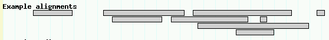
Figure 20: Semantically zoomed alignments at 40K
The overview is the scale that appears at the top of the detailed image. In addition to acting as a reference point and navigation tool, you can place tracks in it. These tracks will always be displayed, and can serve as reference points for well-known genes, cytogenetic bands, or genetic markers.
We will illustrate how to do this by placing a copy of the Motifs track into the overview. Add the following to the bottom of the volvox.conf configuration file:
[Motifs:overview] feature = motif glyph = span height = 5 description = 0 label = 1 key = Motifs
This stanza is identical to the [Motifs] track that we created earlier, except that its name is qualified with ":overview". This tells GBrowse that this is not an ordinary track to be placed in the detail image, but one that should be placed in the overview.
Reload the page. Violá! See Figure 21.
Figure 21: Any number of tracks can be placed in the overview
You can add as many tracks to the overview as you like. The main warning is that if you add lots of features to the overview it can get pretty crowded in there. Performance can also suffer, since each feature must be fetched and rendered each time the overview is displayed.
The last topic we'll cover in this tutorial is configuring GBrowse's
outgoing links. When the user clicks on a glyph in the details image,
he will be taken to another page by following a URL. The URL to
follow is generated from the link option. The default
link option is located in the [TRACK DEFAULTS] section of the config
file; you can specify track-specific links by placing a
link option in one or more of the individual track
stanzas.
The volvox.conf track defaults looks like this:
[TRACK DEFAULTS] glyph = generic height = 10 bgcolor = lightgrey fgcolor = black font2color = blue label density = 25 bump density = 100 # where to link to when user clicks in detailed view link = AUTO
In this case, we've been using a special link URL of "AUTO." This generates an automatic link to a helper script named "gbrowse_details." If you click on some of the features in the current volvox page you'll get an idea of what this script displays. Try clicking on a motif, a spliced transcript, the EDEN gene, and an EST. When you click on the spliced transcript, notice that the content of the "Gene" attribute is displayed. By adding attributes like this one, you can build up a very modest web-browsable database of facts about your features.
We're going to override the default link rule for the motif track. There's nothing sensible to link to, so we'll link to Google using first the motif's name, and then the motif's description.
Go to the [Motifs] stanza in the volvox.conf config file and modify it so that it looks like this:
[Motifs] feature = motif glyph = span height = 5 description = 1 link = http://www.google.com/search?q=$name key = Example motifs
The only change we've made is to add a "link" option to the stanza, where the value is a Google search URL. "$name" is a Perl variable. GBrowse will fill in this variable with the name of the motif. Reload the page and click on a motif to see that this works as advertised ("m01," "m02" and the other example motifs are similar to the names for galactic clusters, so be prepared for some astronomy hits).
It would be more sensible to link to the description of the motif, for example "helix loop helix." Fortunately we can do that too. Just change the link option to:
link = http://www.google.com/search?q=$description
There are a large number of possible variables that you can use inside link rules. See the CONFIGURE_HOWTO document in the GBrowse distribution for the full list. You can also construct links using Perl callbacks as described in the section on displaying ESTs. This gives you the ability to generate any arbitrary URL.
If you want nothing to happen when the user clicks on a feature, just set link to empty ("link = ").
The last thing we'll do is to change the behavior of the [Motif] track so that:
These changes are easy:
[Motifs] feature = motif glyph = span height = 5 description = 1 link = http://www.google.com/search?q=$description link_target = _blank title = Search Google for $description. key = Example motifs
There's now a link_target option. This contains the name
of a browser window in which to load the content when the user clicks
on the feature. If there's no window of that name, the browser will
create a new window and give it the desired name. Choose an ordinary
name like "Google" if you want the Google content to be loaded into
the same window each time, or choose "_blank" as we've done here in
order to pop up a new fresh window each time the user clicks.
The title option contains a bit of text that will be
displayed whenever the user hovers the mouse over the feature for a
second or two. The same variable substitution rules apply, so when
the user mouses over feature "m06", a hints window will pop up that
says "Search Google for SUSHI repeat." Give it a try!
The file volvox_final.conf contains the final configuration file with all the modifications we've made during the course of this tutorial. The data files volvox_all.gff and volvox_all.fa likewise contain the entirety of the feature and DNA data.
The in-memory database is great for smaller data sets, and can handle GFF files of up to about 100,000 features (more if you have lots of memory). For larger data sets, however, you'll want to use a database management system. GBrowse handles a number of DBMS through its "database adaptor" system. In this section, you'll learn to use one of them, the Bio::DB::GFF MySQL adaptor that comes for free when you install BioPerl.
First you'll have to install MySQL. Although it is installed by default in most Linux systems, it will not be present on Windows or Macintosh OSX systems. Go to www.mysql.com and follow the instructions to download and install the database. Come back here when this is done.
Next, you'll need to install the Perl interface to MySQL. On a Windows system using ActiveState Perl, use the ppm tool:
C:\Windows> ppm ppm> install DBD::mysql ppm> quit
On a Unix, Linux or Mac OSX system, use the perl CPAN installer (this may need to be done with root/superuser privileges):
% perl -MCPAN -e shell cpan> install DBD::mysql cpan> quit
Now you're ready to create the MySQL version of the volvox database. First you'll set up a new empty database named "volvox." Using the mysql command-line tool, create the database, grant yourself read/write privileges, and grant the "nobody" user read privileges:
% mysql -uroot -p Enter password: ********* mysql> create database volvox; Query OK, 1 row affected (0.04 sec) mysql> grant all privileges on volvox.* to lstein@localhost; Query OK, 0 rows affected (0.00 sec) mysql> grant select on volvox.* to nobody@localhost; Query OK, 0 rows affected (0.00 sec) mysql> quit Bye
Depending on how mysql was installed, you may not need to provide a password, in which case just type "mysql -uroot" without the "-p" argument. When granting privileges to yourself, replace "lstein" with your own login name. If you are on a Windows system, you may be able to skip this step entirely.
You'll now load the .gff and .fa files into this newly created database. There are actually two steps needed. The first is to "initialize" the database with all the data definitions needed to hold genomic feature data, and the second is to actually load the data. Fortunately, both these steps are handled by the same command-line tool, bp_load_gff.pl, which is part of the BioPerl suite.
Copy the files volvox_all.gff and volvox_all.fa to some convenient place. Then run the following command from the command line:
% bp_load_gff.pl -c -d volvox volvox_all.fa volvox_all.gff volvox_all.gff: loading... volvox_all.gff: 738 records loaded Loading fasta file volvox_all.fa volvox_all.fa: 7 records loaded
The arguments to bp_load_gff.pl are:
| -c | clear (initialize) the database |
| -d volvox | Load into the database named volvox |
| volvox_all.fa volvox_all.gff | The data files to load. |
The MySQL database is all ready to go. Now, in order to tell GBrowse to start using the MySQL database rather than the in-memory database, you need to make a small change to the volvox.conf configuration file. Find the few lines of the file and change them to look like this:
[GENERAL] description = Volvox Example Database db_adaptor = Bio::DB::GFF db_args = -adaptor dbi::mysql -dsn volvox user = nobody pass =
The -adaptor argument is telling GBrowse to use the "dbi::mysql" database adaptor, which is the BioPerl interface to MySQL databases. The -dsn argument tells GBrowse to use the data ssource name "volvox".
When you reload the web page, GBrowse will now be using MySQL. Depending on the speed of your CPU and disk, you might notice that it seems a bit snappier than the in-memory version. See CONFIGURE_HOWTO.txt for more information on configuring GBrowse to use relational databases. Also see the following perldoc manual pages:
It is often useful to have independent annotation data sets that can be visualized together but updated separately. For example, you may be working on a genome that has a core set of stable annotations that everyone shares, such as the set of protein-coding genes, and independent sets of annotations that change frequently, such as promoter predictions and experimental data.
GBrowse provides several mechanisms for making this type of modular annotation possible. You can:
To watch this in action, we will use some real genome annotations from the C. elegans genome project. This is a region around C. elegans cosmid C01F4. The core data that we'll be using is contained in elegans.gff3. The .gff3 suffix indicates that it is using version 3 of the GFF format, which conveniently enough allows both the DNA and the annotation data to be stored in one place.
Refer back to the beginning of the tutorial now and create a GBrowse database directory named "elegans_core". Then copy elegans.gff3 into it.
This is just a short introduction to the many things that you can do with GBrowse. Major features not discussed were:
Have fun!